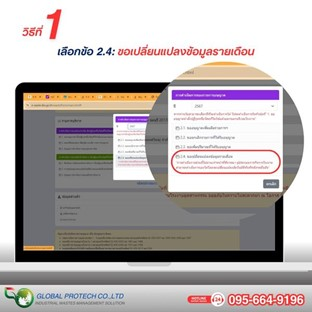
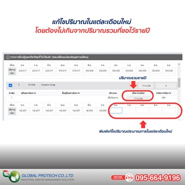
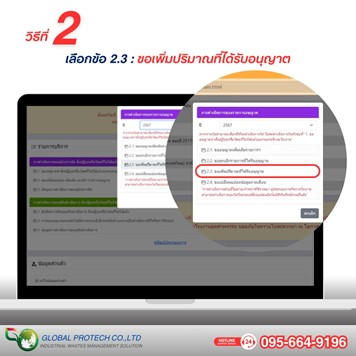
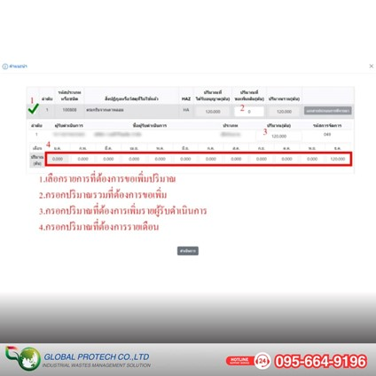

เรื่องต้องรู้ : หากปริมาณกากของเสียที่ขออนุญาต กอ.1 ไว้ ไม่เพียงพอสำหรับการขนส่งครั้งต่อไป
ต้องทำอย่างไร
วิธีที่ 1 เมื่อเข้าระบบ I single form แล้ว ให้เลือกข้อ 2.4 ขอเปลี่ยนแปลงข้อมูลรายเดือน

จากนั้นแก้ไขปริมาณในเดือนที่เหลือของปี
โดยปริมาณที่ระบุในแต่ละเดือนรวมกันต้องไม่เกินกว่าปริมาณรวมที่ได้รับอนุญาตรายปี

วิธีที่ 2 เลือกข้อ 2.3 ขอเพิ่มปริมาณที่ได้รับอนุญาต

จากนั้น
- เลือกรายการที่ต้องการขอเพิ่มปริมาณ
- กรอกปริมาณรวมที่ต้องการขอเพิ่ม
- กรอกปริมาณที่ต้องการเพิ่มรายผู้รับดำเนินการ
- กรอกปริมาณที่ต้องการรายเดือน
โดยต้องแนบเอกสารแนบประกอบการพิจารณา และรอผู้รับดำเนินการตอบรับ
เพื่อนำไปสู่ขั้นตอนการรอพิจารณาจากเจ้าหน้าที่
